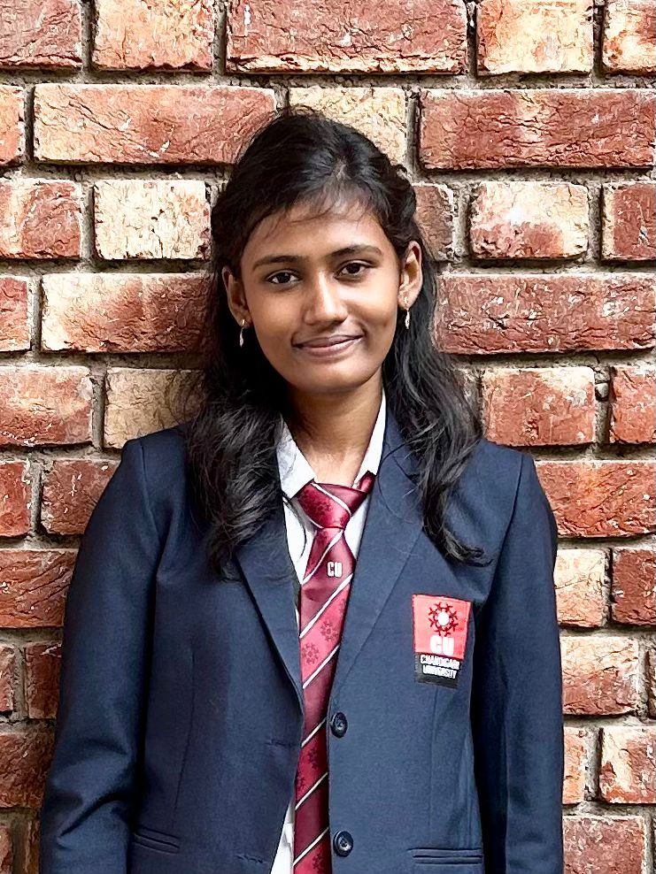

HELLO!
I'm Justina
I am a
I analyze data, build machine learning models, and turn insights into actionable decisions.
HELLO!
I analyze data, build machine learning models, and turn insights into actionable decisions.

I am a driven and meticulous student of Artificial Intelligence and Machine Learning at Chandigarh University, with a strong foundation in C ,C++,SQL,Powerbi. My interest in machine learning and its practical applications is continuously growing. I also have a basic knowledge of Android development and web technologies, including HTML, CSS, and JavaScript. I enjoy problem solving, working with teams, and consistently seek to acquire new tools and technologies to build innovative solutions.
Python | Machine Learning | NLP
Developed a machine learning system to predict personality traits from CVs using NLP techniques. Evaluated multiple models, where Logistic Regression achieved the highest accuracy. Built a web application for CV-based prediction.
📌 Published in IEEE
Python | ML | Sensors | Healthcare AI
Integrated traditional Ayurvedic Nadi Pariksha with machine learning techniques to analyze pulse data and detect dosha imbalances (Vata, Pitta, Kapha) for early health diagnosis.
Python | NLP | Machine Learning
Built a machine learning-based misinformation detection system to classify fake and real news using text preprocessing, feature extraction, and classification models.
I’m open to opportunities in Data Analytics and Machine Learning. Feel free to reach out for collaborations, internships, or full-time roles.
📧 Email: justina99946@gmail.com
🔗 LinkedIn: linkedin.com/in/justina-j
💻 GitHub: github.com/Justina2309